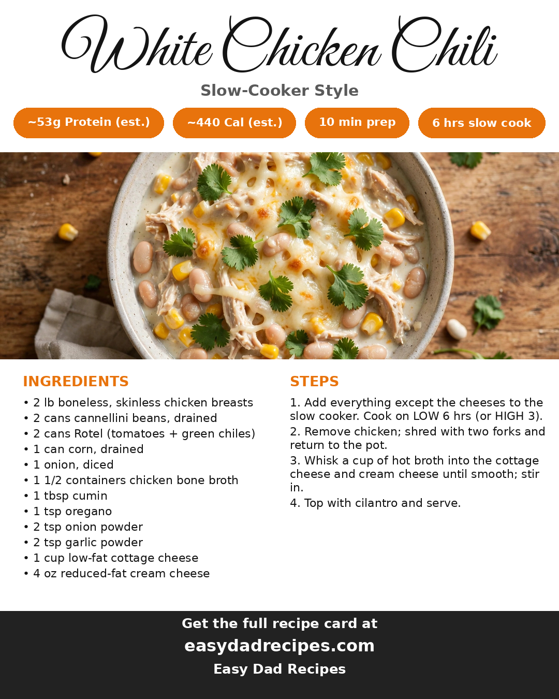

2026-10-28
Ten minutes of prep in the morning, and the slow cooker carries dinner the rest of the way. Chicken, white beans, tomatoes with green chiles, corn, and broth simmer together all day, and the finish — cottage cheese and cream cheese whisked smooth with a ladle of hot broth — turns it rich and creamy without a roux or a long stir at the stove. At about 53 grams of protein per serving, it is the kind of dinner that actually keeps you full, and the leftovers make Monday's lunch without a second thought.
Here's the card — save it for next time:
Want the printable version? Get it here: https://easydadrecipes.com/recipes/slow-cooker-white-chicken-chili.html
Recipe inspiration: viral crockpot white chicken chili short: https://www.youtube.com/shorts/IbfmIENN1uM
— Dad
Here's the card — save it for next time:

Want the printable version? Get it here: Slow-Cooker White Chicken Chili
Credit: viral crockpot white chicken chili short
— Dad
One email a week — the new recipes and the week's meal plan.
Subscribe free